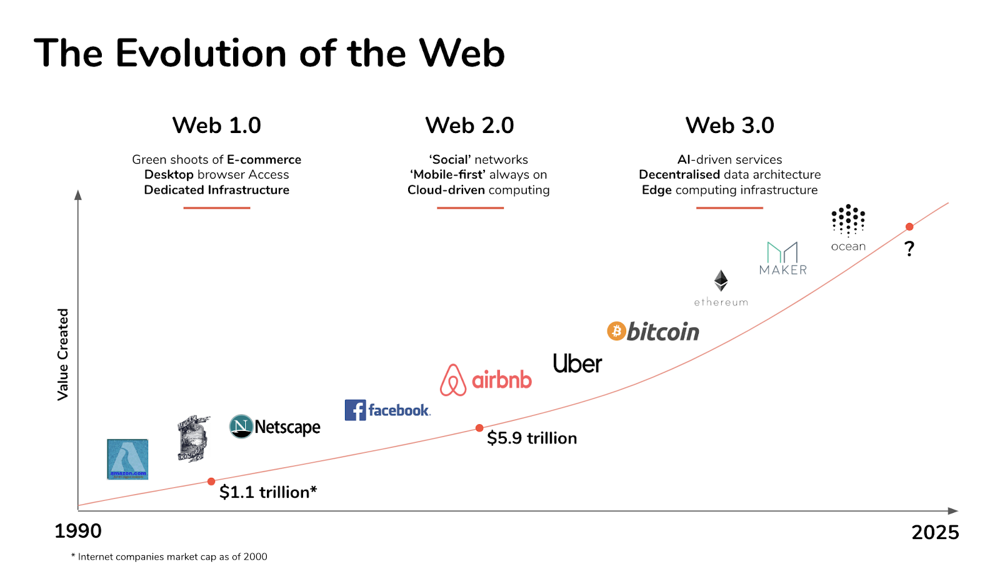
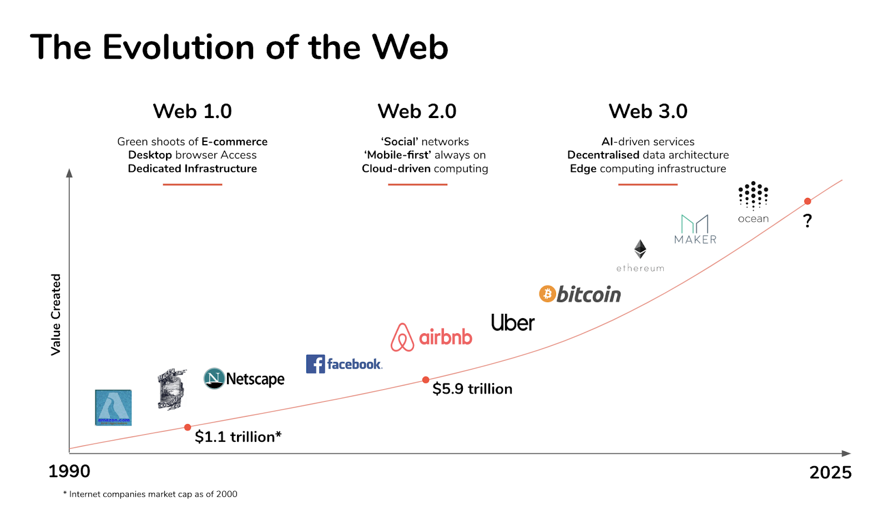
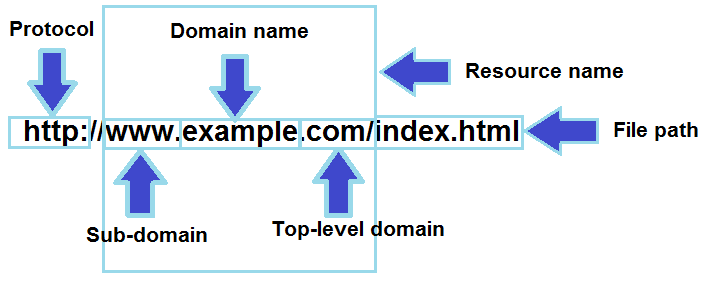
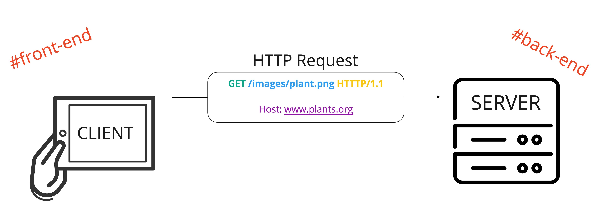
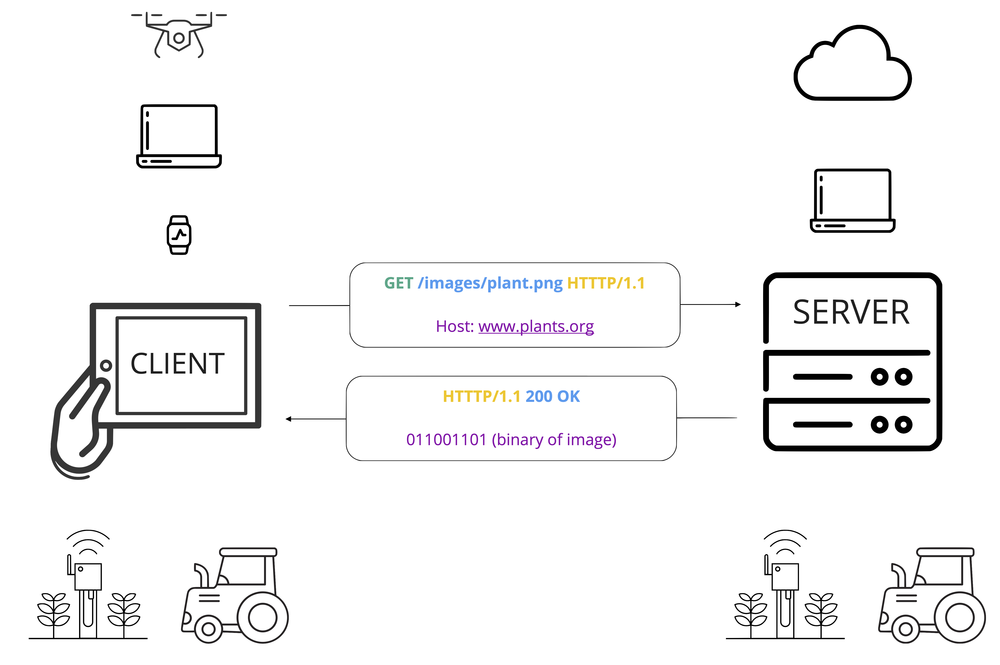
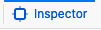

Introduction to Ag Informatics
Module 1, Lecture 1.2Ankita Raturi, ankita@purdue.edu
Outline for Today
- Internet & Web Fundamentals
- Version Control
- Getting your Code on the Web
- About Lab 1
Goal
Learn the fundamentals necessary to engage in
web application development for food and agricultural systems.
#software-engineering #front-end
Internet
img src, in order: https://www.submarinecablemap.com/; Barrett Lyon, https://www.opte.org/the-internet.
World Wide Web
 

img src, in order: Chris73, Wikimedia Commons; Euclid Project, https://euclid-project.eu/modules/chapter1.html
How do websites work?
You can watch the entire series on the code.org youtube playlist
Addressing
Internet Protocol (IP) Address: 93.184.216.34

img src: mickmackusa, https://stackoverflow.com/questions/43183205/how-to-use-get-variable-index-phpcat-about, 2017
An HTTP Request
- GET: request a web page or data
- POST: submit data
Server's Response

- Response Types:
- 200 Ok
- 404 Not Found
- 301/302 Moved Permanently/Temporarily
- 500 Internal Server Error
Connected Devices
Inspecting Websites
- Launch firefox
- Go to the search engine: www.duckduckgo.com
- Open Firefox's Network Monitor:
- CTRL + SHFT + E (windows), or CMD + OPT + E (Mac)
- In the File Menu, go to Tools > Browser Tools > Web Developer Tools > Network tab
- Stuck? Visit https://developer.mozilla.org/en-US/docs/Tools/Network_Monitor
- What do you see?
- Now try: www.google.com.
- Streaming site like: www.youtube.com
- How about a website with user input like: www.twitter.com Filter to just view media loading.
- Learn more about the requests: https://docs.google.com/document/d/1ctikDy9v-e_bxvZvgFIE4Di7OUt2usz2V8qvdCpF5Ts/edit
Inspecting Websites
- Navigate to example.org
- Click on 
- Hover over the text
Example Domain
- What do you see?
- How about: www.purdue.edu Let's poke around.
- What do you think has been used to build the site?
- Right click on the banner image and click inspect. Can you find the URL for the image?
- Let's go through the parts of the inspector.
Version Control
https://youtu.be/w3jLJU7DT5E
GIT, a command line tool
Demo: cloning the class repository.
Getting your code on the cloud!
Demo: example of how to create a virtual server, and deploy your code so it is publicly accessible
You will *not* have to do this for your lab. However it is good to know.
Using the internet to write code!
- Stack Overflow: https://stackoverflow.com/
https://stackoverflow.com/questions/114543/how-to-horizontally-center-an-element
Internet Swag
Github education pack provides access to a range of tools, including some of the ones I've shown you that usually cost money.
https://education.github.com/packEach module, I will share references and resources for you to deepen your knowledge/skills.
Lab 1
- Pre-work: You should have already viewed the pre-class videos and gotten familiar with HTML, CSS, and Git.
- During Lab: You will create a basic website and add it to a repository.
Questions?
License

Introduction to Agricultural Informatics Course by Ankita Raturi, Purdue University is licensed under a Creative Commons Attribution-NonCommercial-ShareAlike 4.0 International License.
- You are free to:
- Share — copy and redistribute the material in any medium or format
- Adapt — remix, transform, and build upon the material
- Under the following terms:
- Attribution — You must give appropriate credit, provide a link to the license, and indicate if changes were made. You may do so in any reasonable manner, but not in any way that suggests the licensor endorses you or your use.
- NonCommercial — You may not use the material for commercial purposes.
- ShareAlike — If you remix, transform, or build upon the material, you must distribute your contributions under the same license as the original.
- No additional restrictions — You may not apply legal terms or technological measures that legally restrict others from doing anything the license permits.